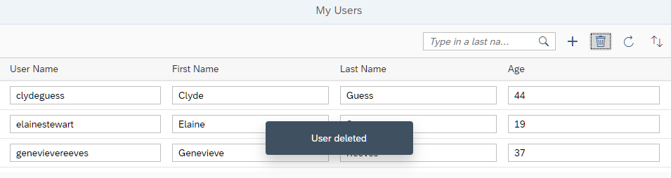

You can view and download all files at OData V4 - Step 7.
...
onInit: function () {
...
oViewModel = new JSONModel({
busy : false,
hasUIChanges : false,
usernameEmpty : false,
order : 0
});
...
},
onCreate : function () {
var oList = this.byId("peopleList"),
oBinding = oList.getBinding("items"),
oContext = oBinding.create({
"UserName" : "",
"FirstName" : "",
"LastName" : "",
"Age" : "18"
});
this._setUIChanges();
this.getView().getModel("appView").setProperty("/usernameEmpty", true);
oList.getItems().some(function (oItem) {
if (oItem.getBindingContext() === oContext) {
oItem.focus();
oItem.setSelected(true);
return true;
}
});
},
onDelete : function () {
var oContext,
oSelected = this.byId("peopleList").getSelectedItem(),
sUserName;
if (oSelected) {
oContext = oSelected.getBindingContext();
sUserName = oContext.getProperty("UserName");
oContext.delete().then(function () {
MessageToast.show(this._getText("deletionSuccessMessage", sUserName));
}.bind(this), function (oError) {
this._setUIChanges();
if (oError.canceled) {
MessageToast.show(this._getText("deletionRestoredMessage", sUserName));
return;
}
MessageBox.error(oError.message + ": " + sUserName);
}.bind(this));
this._setUIChanges(true);
}
},
onInputChange : function (oEvt) {
if (oEvt.getParameter("escPressed")) {
this._setUIChanges();
} else {
this._setUIChanges(true);
if (oEvt.getSource().getParent().getBindingContext().getProperty("UserName")) {
this.getView().getModel("appView").setProperty("/usernameEmpty", false);
}
}
},
...We add the onDelete event handler to the controller. In the event handler, we check whether an item is selected in the table
and if so, we retrieve the binding context of the selection and call its delete method. By doing this, the context is
removed from the table on the client side and the deletion is stored as a pending change in the update group of the table's list
binding. A call to _setUIChanges ensures that the appView model reflects the deletion as a pending
change and that the Save button becomes enabled. The deletion will be submitted with all other changes related
to the same update group once the Save button is pressed. If the deletion fails on the server side, or the
changes are reset via API, the related entity is restored in the table automatically. To distinguish these two situations, the
rejected error has canceled set to true in case of a reset.
<mvc:View
controllerName="sap.ui.core.tutorial.odatav4.controller.App"
displayBlock="true"
xmlns="sap.m"
xmlns:mvc="sap.ui.core.mvc">
<Shell>
<App busy="{appView>/busy}" class="sapUiSizeCompact">
<pages>
<Page title="{i18n>peoplePageTitle}">
<content>
<Table
id="peopleList"
growing="true"
growingThreshold="10"
items="{
path: '/People',
parameters: {
$count: true,
$$updateGroupId : 'peopleGroup'
}
}"
mode="SingleSelectLeft">
<headerToolbar>
<OverflowToolbar>
<content>
<ToolbarSpacer/>
<SearchField
.../>
<Button
.../>
<Button
id="deleteUserButton"
icon="sap-icon://delete"
tooltip="{i18n>deleteButtonText}"
press=".onDelete">
<layoutData>
<OverflowToolbarLayoutData priority="NeverOverflow"/>
</layoutData>
</Button>
<Button
.../>
<Button
...>
</content>
</OverflowToolbar>
</headerToolbar>
<columns>
...
</columns>
<items>
...
</items>
</Table>
</content>
<footer>
...
</footer>
</Page>
</pages>
</App>
</Shell>
</mvc:View>We change the mode of the table to SingleSelectLeft
to make it possible to select a row.
We add the Delete
button to the toolbar. With the OverflowToolbarLayoutData
priority="NeverOverflow" parameter, we make sure that the button is
always visible.
... # Toolbar ... #XBUT: Button text for delete user deleteButtonText=Delete User ... # Messages ... #XMSG: Message for user deleted deletionSuccessMessage=User {0} deleted #XMSG: Message for user restored (undeleted) deletionRestoredMessage=User {0} restored ...
We add the missing texts to the properties file.